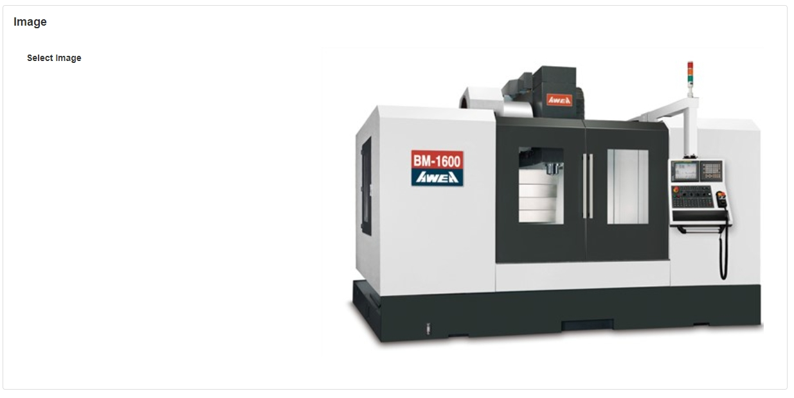

Image
The Image Block allows you to display a specific image to the user. This is useful if you would like to add visuals to the page to style the App, or to present important information to the user in a way that will stand out and attract attention - guiding your visitor's line of sight.
Important
Strike a balance between style and performance. Keep in mind that the larger the file size and the more images added to a single App Page, the longer the loading time. This effect will be felt during both design (open and save of an App) and run time.
When in doubt, use fewer images and aim for a file size of 200kb or less.
Image Properties
Appearance
Common Properties
The visibility property is common to most Blocks;
See the Common Properties article for more details on common appearance properties.
Image Source
Choose whether the image is stored in App Files (default) or Embedded.
The App Files option, added in v4.4.17, is the recommended image source - embedded files bloat the app size and cannot be copied/downloaded/reused.
Image
You can select the Image you want to be displayed. The following image file types are supported: BMP, GIF, JPEG, PNG, SVG, and WEBP.

Behavior
The Image block doesn't have specific behavior properties beyond the common ones.
Action
Common Properties
Properties that are common to most Blocks include: Navigate To and Show Confirmation Dialog;
See the Common Properties article for more details on common action properties.
Additional Information
SVG file types are supported for all image properties, which was added in v4.1.13. This allows for scalable vector graphics that maintain quality at any size.
In v4.4.17, a new "Image Source" property was added to the Image Block, allowing images to be stored in App Files. This enhancement allows images to be shared across multiple blocks and improves storage and retrieval efficiency. Previously, images could only be embedded within individual blocks.
Last modified: August 15, 2025